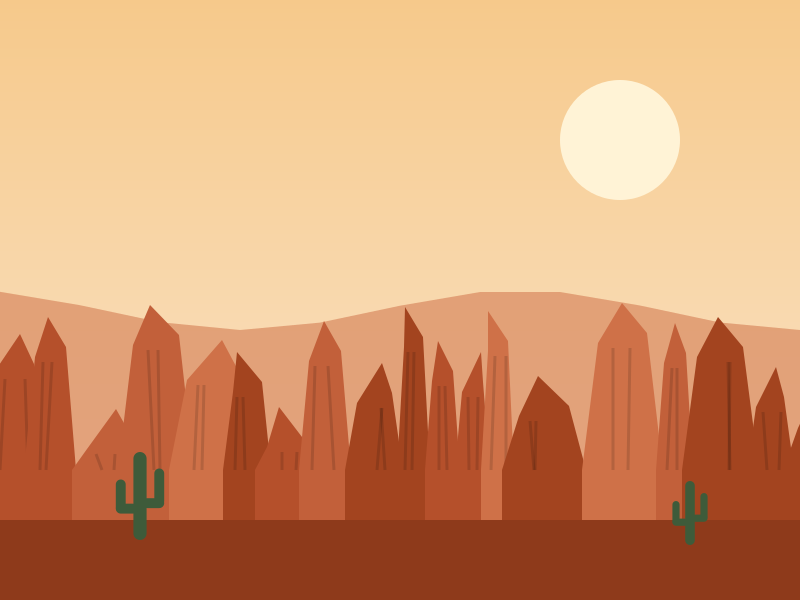
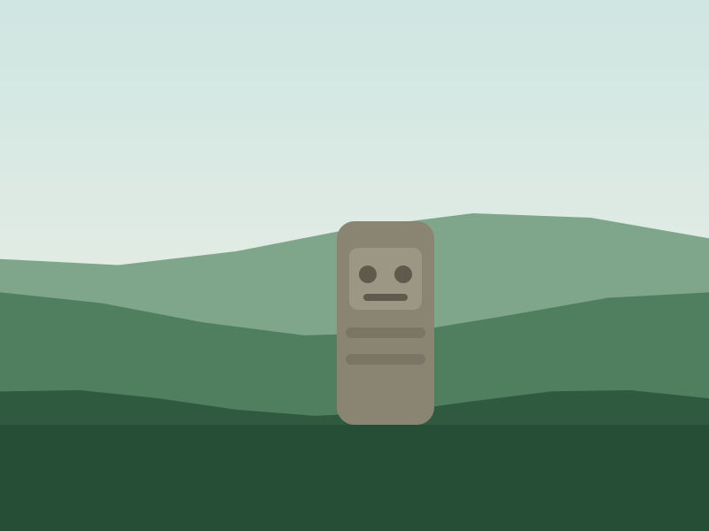
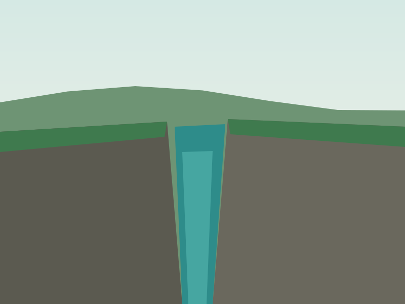
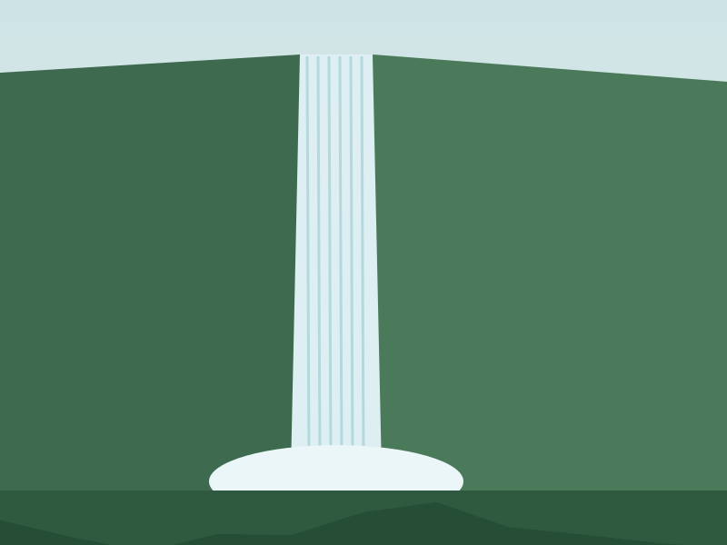
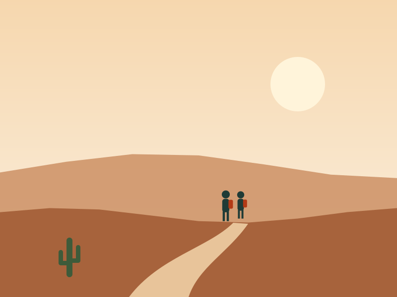
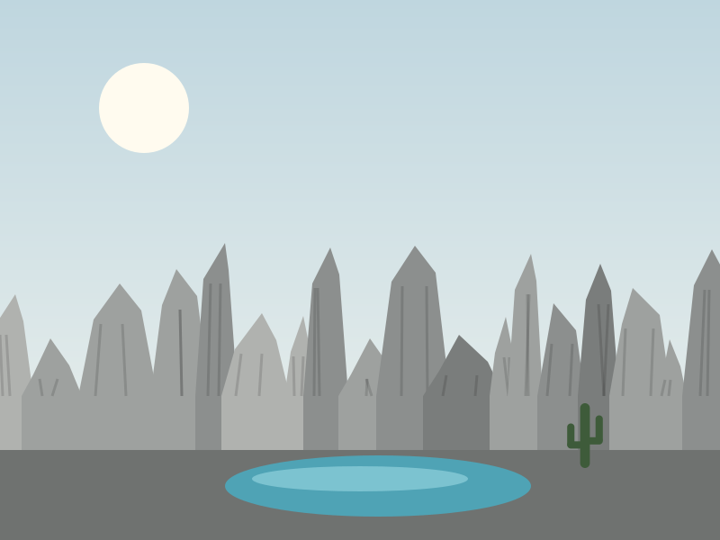
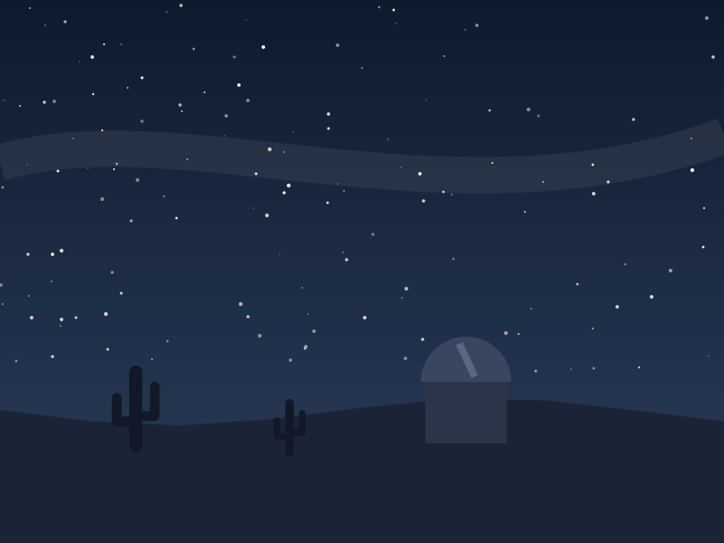

Desierto de la Tatacoa
Villavieja
Bosque seco de unos 330 km² con tierras rojas en El Cusco, tierras grises en Los Hoyos y uno de los mejores cielos del país.
Neiva · Huila · Colombia
Planes guiados a la Tatacoa, San Agustín, el Estrecho del Magdalena y el Salto de Bordones, con guías locales y grupos pequeños.
Cuatro lugares que no te puedes perder en el Huila.

Villavieja
Bosque seco de unos 330 km² con tierras rojas en El Cusco, tierras grises en Los Hoyos y uno de los mejores cielos del país.

San Agustín e Isnos
Patrimonio de la Humanidad desde 1995, con esculturas en piedra talladas entre los siglos I y VIII.

San Agustín
El río más importante de Colombia se encoge hasta pasar por un canal de roca de unos 2,20 metros de ancho.

Isnos
Una cascada de cerca de 400 metros de altura, a la que se llega con una caminata entre montañas.
Precios de referencia por persona. Salidas desde Neiva.
2 días · 1 noche
$ 380.000
3 días · 2 noches
$ 890.000
5 días · 4 noches
$ 1.650.000
Somos un equipo de guías nacidos en el Huila. Creemos que la mejor forma de conocer una región es con alguien que la ha caminado toda su vida: por eso viajamos en grupos pequeños, contratamos transporte y hospedaje local y cuidamos los lugares que visitamos.
Cada plan incluye guía, transporte y asistencia durante el viaje, para que tú solo te preocupes por disfrutar.
4
destinos
12
viajeros máx. por grupo
100 %
guías huilenses



Cuéntanos qué plan te interesa y te contactamos.